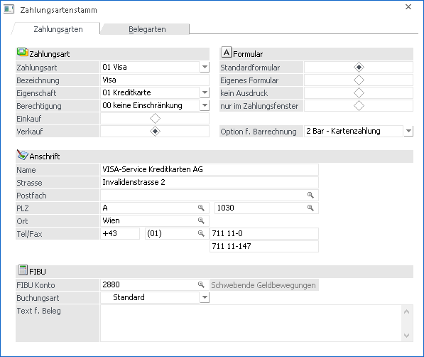
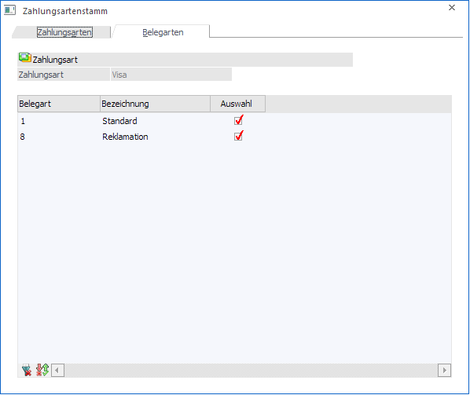

Über die Belegart und die Zahlungskondition können Sie festlegen, ob nach Druck des Beleges die Faktura sofort ausgeglichen werden soll. Die verschiedenen Zahlungsarten werden in WinLine FAKT im Menüpunkt…
1 Stammdaten
1 Mandantenstammdaten
1 Zahlungsarten
… definiert.
Der Zahlungsartenstamm ist in 2 Register unterteilt:
Register Zahlungsarten

Um eine neue Zahlungsart anzulegen, wählen Sie aus der
Auswahlliste den Eintrag NEUEINGABE oder klicken Sie den +-Button an ( ). Wenn Sie eine bereits angelegte
Zahlungsart editieren wollen, wählen Sie diese aus der Auswahlliste aus. Über
die sogenannte VCR-Buttonleiste kann durch Mausklick zwischen den Datensätzen
geblättert werden. Damit auf diese Weise auch Daten kontrolliert und geändert
werden können, kann mit der Tastenkombination SHIFT + F5 eine
Zwischenspeicherung der Daten (Daten werden gespeichert, der Inhalt in den
Masken bleibt bestehen, und auch der Focus bleibt im letzten veränderten Feld
stehen) durchgeführt werden.
). Wenn Sie eine bereits angelegte
Zahlungsart editieren wollen, wählen Sie diese aus der Auswahlliste aus. Über
die sogenannte VCR-Buttonleiste kann durch Mausklick zwischen den Datensätzen
geblättert werden. Damit auf diese Weise auch Daten kontrolliert und geändert
werden können, kann mit der Tastenkombination SHIFT + F5 eine
Zwischenspeicherung der Daten (Daten werden gespeichert, der Inhalt in den
Masken bleibt bestehen, und auch der Focus bleibt im letzten veränderten Feld
stehen) durchgeführt werden.
 Damit kann der
erste Datensatz angesprochen werden (Tastatur: STRG SHIFT POS1).
Damit kann der
erste Datensatz angesprochen werden (Tastatur: STRG SHIFT POS1).
 Damit kann der
vorherige Datensatz angesprochen werden (Tastatur: SHIFT -).
Damit kann der
vorherige Datensatz angesprochen werden (Tastatur: SHIFT -).
 Damit kann der
nächste Datensatz angesprochen werden (Tastatur: SHIFT +).
Damit kann der
nächste Datensatz angesprochen werden (Tastatur: SHIFT +).
 Damit kann der
letzte Datensatz angesprochen werden (Tastatur: STRG SHIFT ENDE).
Damit kann der
letzte Datensatz angesprochen werden (Tastatur: STRG SHIFT ENDE).
Damit wird die
nächste freie Nummer für die Neuanlage gesucht.
Folgende Eingabefelder stehen Ihnen im Zahlungsartenstamm zur Verfügung:
Ø Bezeichnung
Es kann eine bis zu 30 Stellen lange Bezeichnung eingegeben werden.
Ø Eigenschaft
Aus der Auswahllistbox kann eine der, vom Programm fix vordefinierten, Eigenschaften ausgewählt werden.
Hier stehen die Einträge…
ü 01 Kreditkarte
ü 02 Scheck
ü 03 Bar
ü 04 Nachnahme
ü 05 keine Zahlung (bei Auswahl dieser Eigenschaft wird keine Zahlung in die WinLine übergeben bzw. wird in der WinLine FAKT auch keine DZ-Buchung erstellt!)
ü 06 Kreditkarte (Worldpay)
ü 07 Kreditkarte (mPay24)
ü 08 Kreditkarte (PayGate)
ü 09 Trinkgeld
.. zur Verfügung.
Ø Berechtigung
Für jede Zahlungsart kann ein Berechtigungsprofil vergeben werden. Wenn der Anwender eine Zahlungsart aufruft, wird geprüft, ob der Anwender einer Benutzergruppe zugeordnet wurde, welche in dem jeweiligen Profil enthalten ist und ob somit eine Bearbeitung erlaubt wäre (nähere Informationen entnehmen Sie bitte dem WinLine ADMIN - Handbuch).
Hinweis
Benutzern des Typs "Administrator" oder mit der Administratorenberechtigung "Benutzeradministrator" steht in der Auswahlbox der Punkt ">> Neues Profil" zur Verfügung. Über die Anwahl dieses Eintrags kann in der Folge ein neues Berechtigungsprofil angelegt werden.
Ø Einkauf / Verkauf
Durch Setzen de Radiobuttons kann definiert werden ob die Zahlungsart für den Einkauf oder für den Verkauf zur Verfügung stehen soll.
Ø Anschrift
Diese Daten können am Zahlungsformular angedruckt werden z.B. Firmenadresse bei der Zahlungsart BAR.
Ø FIBU-Kontonummer
Damit eine ordnungsgemäße Erfassung der Zahlung in der Buchhaltung erfolgen kann, ist es erforderlich hier ein Zahlungskonto (z.B. Bank, Kassa, usw.) zu hinterlegen.
Ø Buchungsart
Aus der Auswahllistbox kann eine Buchungsart ausgewählt werden, mit der die Zahlung gebucht werden soll. Dabei stehen alle Buchungsarten zur Verfügung, die in der WinLine FIBU mit dem Buchungscode DZ für Verkaufszahlungsarten bzw. KZ für Einkaufszahlungsarten angelegt sind. Standardmäßig wird der Wert "Standard" vorgeschlagen.
Hinweis: Es wird dabei nur die Buchungsart übergeben; es werden jedoch keine weiteren Einstellungen (Datum, Nummernkreis usw.) aus der Buchungsart verwendet.
Ø Text für Beleg
Hier können Sie einen Zusatztext hinterlegen, der am Beleg angedruckt werden kann.
Ø Formular
Wird das WinLine Zahlungsmodul eingesetzt, können Sie mittels der Formular-Einstellung entscheiden, ob unmittelbar nach dem Fakturendruck eine Zahlungsbestätigung gedruckt wird.
ü Standard Formular
Wird die
Einstellung "Standard-Formular" gewählt, wird immer das Standard-Formular
"P02W356ZA" gedruckt. Das Formular kann wie jedes andere Formular im WinLine
Formular-Editor angepasst werden.
ü Eigenes Formular
Wenn für eine
bestimmte Zahlungsart ein individuelles Formular gedruckt werden soll, wählen
Sie die Einstellung "Eigenes Formular". Die individuellen Formulare heißen immer
P02W356ZA[Nr. der Zahlungsart]. Um ein individuelles Formular anzulegen, gehen
Sie vom Standard-Formular P02W356ZA aus und speichern Sie es unter der
entsprechenden Nummer (Datei/Speichern unter).
ü Kein Ausdruck
Wird diese Option
ausgewählt, wird nach dem Fakturendruck kein weiteres Formular ausgedruckt.
ü nur im Zahlungsfenster
Mit
dieser Einstellung wird eine Zahlungsbestätigung (P02W356ZA) nur dann gedruckt,
wenn eine Zahlung über den Menüpunkt "Zahlungen" unter Erfassen im Modul FAKT
erfolgt. Wenn diese Zahlungsart im Zuge des Belegerfassens verwendet wird, wird
hier kein Zahlungsbeleg gedruckt.
Achtung
Damit die Sofortzahlung gleich nach dem Belegdruck erfolgen kann, muss in der betreffenden Belegart im Register Zahlungen die Checkbox "Zahlung erlauben" aktiviert sein. Ist die Checkbox aktiv, kann bei dieser Belegart unmittelbar nach dem Rechnen eines Auftrages, eines Lieferscheines oder einer Faktura eine Zahlung durchgeführt werden.
Des Weiteren kann in der Belegart eine Zahlungsart hinterlegt werden, welche automatisch im Belegerfassen - Zahlungsmodul vorgeschlagen wird und dort noch editiert werden kann.
Die erzeugten Buchungssätze sind abhängig von der Buchungsart (die in der Belegart hinterlegt wird).
ü Buchungsart DF (Debitoren
Faktura)
Es wird eine DF mit OP erstellt. Wird auch die Zahlung gleich
durchgeführt, wird eine DZ mit Ausgleich bzw. Teilausgleich der OP erstellt.
ü Buchungsart KF (Kreditoren
Faktura)
Es wird eine KF mit OP erstellt. Wird auch die Zahlung gleich
durchgeführt, wird eine KZ mit Ausgleich bzw. Teilausgleich der OP erstellt.
Als Zahlungsmittelkonto wird das hinterlegte Konto aus der verwendeten Zahlungsart genommen.
Ø Option f. Barrechnungen
Hier kann ausgewählt werden, um welchen Typ von Zahlungsart es sich handelt, wobei folgende Optionen zur Verfügung stehen:
ü Zielrechnung
Wenn mit dieser
Option gezahlt wird, wird das Konto verwendet, welches im Zahlungsartenstamm
hinterlegt ist. Es wird kein Datenerfassungsprotokoll-Eintrag geschrieben, wenn
mit dieser Zahlungsart gezahlt wird.
ü Bar - Bargeld
Mit dieser Option
wird für die DZ das FIBU-Konto verwendet, welches im Kassenstamm hinterlegt ist.
Hier wird der Betrag der Zahlung in das Datenerfassungsprotokoll verwendet.
ü Bar- Kartenzahlung
Hier wird
für die Zahlung das FIBU-Konto verwendet, welches im Zahlungsartenstamm
hinterlegt ist und es wird das Datenerfassungsprotokoll befüllt.
ü Lieferschein
Falls eine
Zahlungsart mit dieser Einstellung verwendet wird, wird im Kassendashboard keine
Rechnung, sondern ein Lieferschein erzeugt. Zahlungen mit dieser Option werden
nicht verbucht und schreiben keinen Eintrag ins DEP. In anderen
Belegerfassen-Menüpunkten können diese Zahlungsarten nur bis zur Belegstufe
"Lieferschein" verwendet werden.
Hinweise im Zusammenhang mit Barrechnungen:
Wenn vorhandene Zahlungsarten auf die Option "Bar" gesetzt werden bzw. neue Barzahlungsarten angelegt werden, müssen diese in der Belegart und im "Zahlungstableau" in der Kassentableau-Zuordnung zusätzlich aktiviert werden.
Im Falle, dass Rechnungen auch per Überweisung gezahlt werden, muss eine eigene Zahlungsart angelegt werden, mit der Option "Zielrechnung" damit diese verwendet werden kann und diese Zahlungsart nicht im Datenerfassungsprotokoll mitprotokolliert wird.
Wenn im Menüpunkt Kassenstammdaten bei einem Benutzer ein abweichendes FIBU-Konto eingetragen ist, wird das dort hinterlegte Konto verwendet.
Register Belegarten
Es werden alle vorhandenen Belegarten (je nach Zahlungsart nur die Einkaufs- bzw. Verkaufsbelegarten), bei denen das Kennzeichen "Zahlung erlauben" aktiviert ist, in der Tabelle angezeigt.

Ø Auswahl
Durch Setzen des Häkchens in der Spalte Auswahl kann definiert werden, für welche Belegarten die Zahlungsart erlaubt ist.